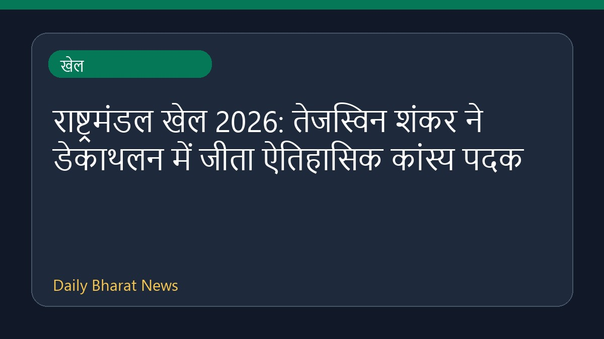

राष्ट्रमंडल खेल 2026: तेजस्विन शंकर ने डेकाथलन में जीता ऐतिहासिक कांस्य पदक

राष्ट्रमंडल खेल 2026 में तेजस्विन शंकर ने डेकाथलन स्पर्धा में शानदार प्रदर्शन करते हुए कांस्य पदक अपने नाम किया। चोट से जूझने के बावजूद उन्होंने इतिहास रचते हुए कुल 7976 अंक हासिल किए और राष्ट्रमंडल खेलों में डेकाथलन में पदक जीतने वाले पहले भारतीय एथलीट बन गए। इस प्रतियोगिता के दौरान भारतीय खिलाड़ियों का प्रदर्शन उल्लेखनीय रहा, जिसमें नीरज चोपड़ा ने भी रजत पदक हासिल किया। तेजस्विन की यह ऐतिहासिक उपलब्धि भारतीय एथलेटिक्स के लिए एक महत्वपूर्ण क्षण है।
मूल स्रोत: Sports News Sources
CWG 2026 — Tejaswin Shankar in Decathlon: Indian wins bronze, ends with 7976 points - Sportstar ↗
CWG 2026 — Tejaswin Shankar in Decathlon: Indian wins bronze, ends with 7976 points - Sportstar ↗